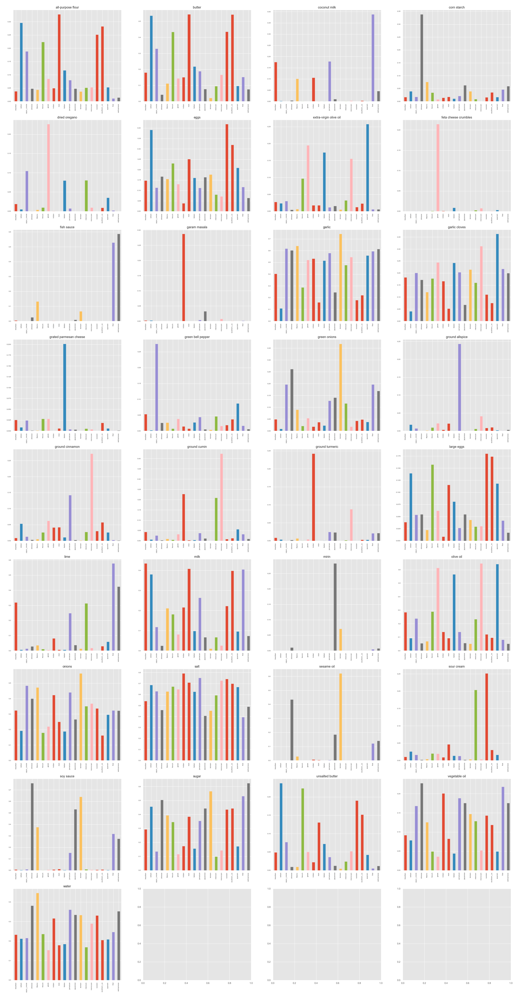

For each of the twenty cuisines, the top seven ingredients were selected, yeilding only 33 unique popular ingredients. Then the relative frequency of these unique ingredients were calculated for each cuisine's collection of recipies.
The unique fingerprints of top ingredients can give insight to how the machine learning model might use an ingredient for classification. Some ingredients, like water or eggs are fairly evenly distributed across cuisines. Other ingredients, like corn starch, is more indicitive of a Chinese Cuisine recipe.
